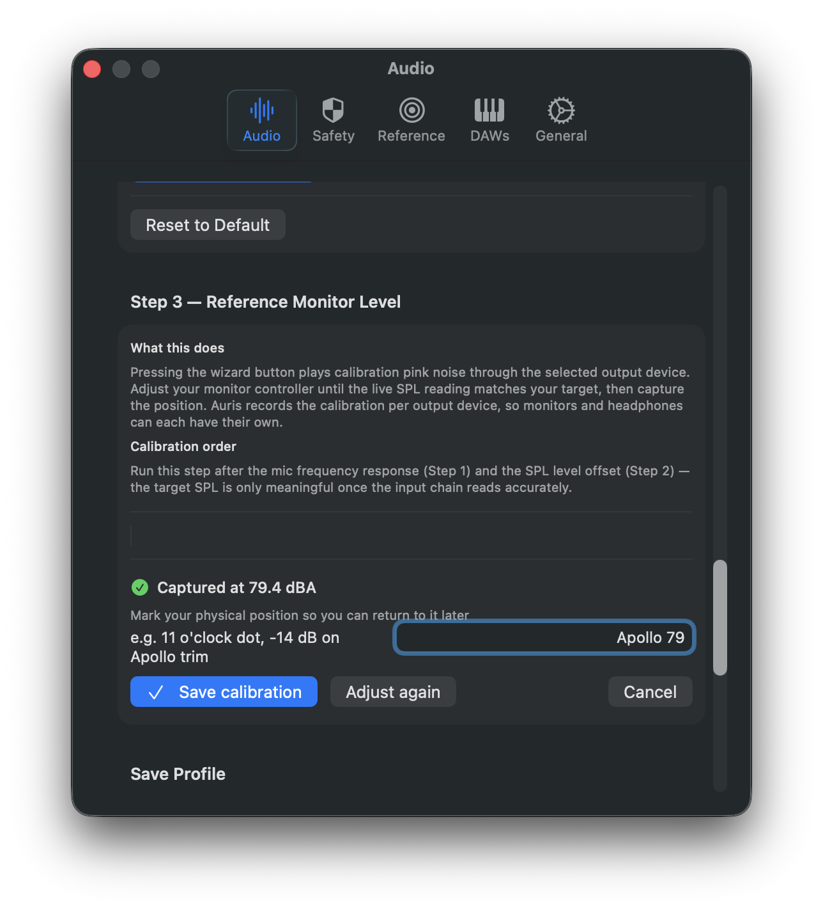
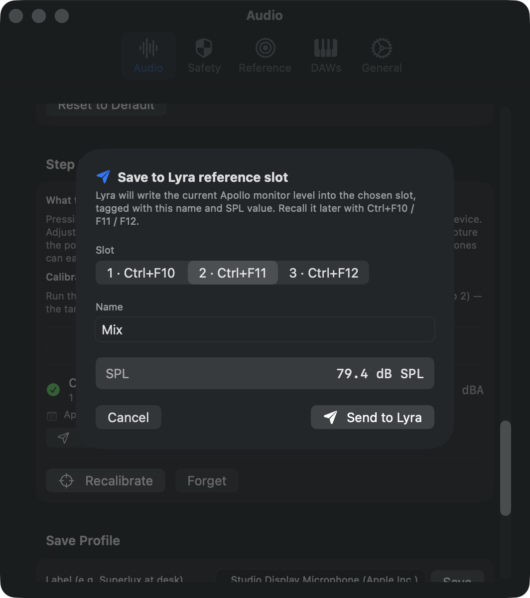
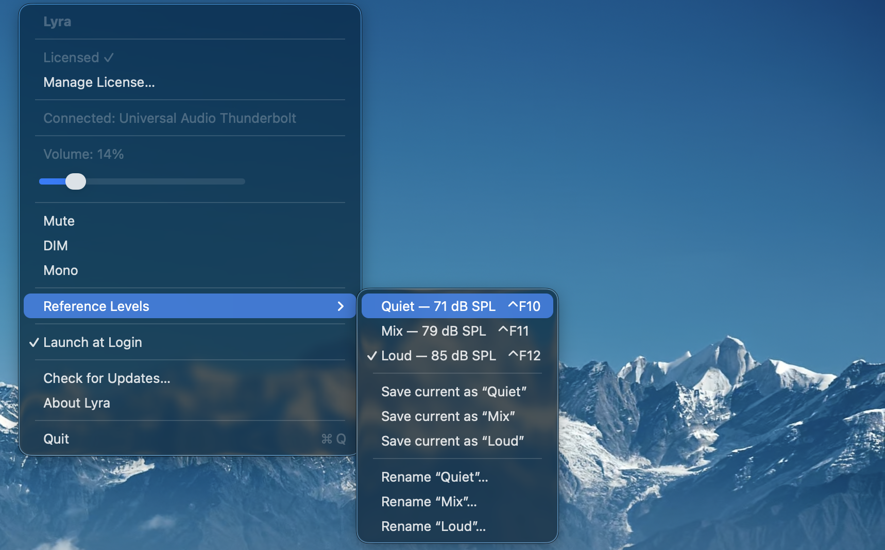
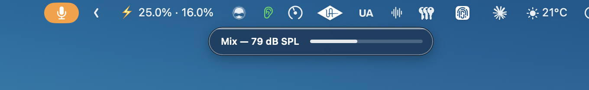

The monitor knob is the most consequential control in any studio, and the one most engineers have the loosest grip on. Ask a producer what level they mix at and you'll hear "comfortable", "loud enough", or — if they're feeling specific — "around eleven o'clock". None of those are numbers. None of them are repeatable. None of them survive a power cycle, a coffee break, or a session in another room.
That gap between intention and reality is where a surprising amount of bad mixing happens. The chorus that felt enormous at 6pm sounds thin in the morning, not because the mix changed but because the level did. The bass that "needs another dB" gets it, then another the next day, then another, until the whole low end is mud at any volume below what was set four sessions ago. None of this requires the engineer to be careless. It just requires them not to know what level they're actually working at.
The reason this isn't already solved is that solving it has historically meant buying a calibrated SPL meter, leaving it sitting next to your monitor controller, and re-checking it every time you turn the knob. Which, predictably, no one does. The tool is too separate from the workflow to live inside it.
The integration shipping in Auris 1.2 and Lyra 1.4 is a small attempt to close that gap — an SPL meter that lives in the menu bar talking to a volume controller bound to the F-keys. Once they know about each other, three monitor levels become as accessible as Cmd+S.
The 90-second setup
The whole pairing flow takes about a minute and a half, end to end, and only needs to happen once per listening position.
Step one is calibration. In Auris, open Settings → Audio → Step 3: Target-level calibration and click Run wizard. Pink noise begins playing through the selected output. The monitor controller is then turned by hand until the live SPL reading lands on the target — 79 dBA for K-14, 83 for K-20, or whatever reference you mix to. When the number sits inside the tolerance band, click Capture position.

Type a description of the knob position so future-you can verify it ("Apollo monitor knob — 11 o'clock dot"), then save.
Step two is the handoff. The saved calibration card now shows a Send to Lyra… button. Clicking it opens a sheet with three things to confirm: which slot to write to (1, 2, or 3 — corresponding to Ctrl+F10, Ctrl+F11, Ctrl+F12), what to call the level, and the dB SPL value Auris just measured. The slot picker remembers the last choice, the name pre-fills with something sensible based on the target, and the SPL is read-only.

Click Send to Lyra. Behind the scenes Auris fires lyra://reference/2/save?name=Mix&dBSPL=79.4; Lyra reads its current Apollo monitor level (which, importantly, is the position you just calibrated against), tags the slot with the name and SPL value, and writes it to disk. The whole exchange takes about as long as it takes to tab between two applications.
What you get back
Open Lyra's menu bar menu and the slots now read with their calibrated values: Quiet — 71 dB SPL, Mix — 79 dB SPL, Loud — 85 dB SPL. The HUD that appears when you press Ctrl+F-keys shows the same — the slot name and the dB SPL value, in plain digits, for the second and a half it takes to read it.

This is most of the value of the integration: a familiar listening level, a known number, a key combination. Not a dialog, not a calibration ritual to run again, not a meter sitting on the desk. Just Ctrl+F11 → that's mix level → carry on.

Why the SPL value matters
It would have been easier to ship this as a slot-recall system that only stored the tapered position — name plus knob value, no calibration data. Most other tools that solve this problem stop there. The SPL number is the thing that turns the slot from a memory into a measurement.
Three monitor presets named "low / med / high" are useful. Three monitor presets named "71 / 79 / 85 dB SPL" are accountable. The next time you calibrate the same speakers — whether tomorrow or in three months — you'll know whether the slot still hits its target. If Mix calibrated at 79 last time and reads 81 this time, something has drifted: a knob position, the room treatment, the ambient floor, the converter output. You have a baseline to argue against.
It also exposes a small lie that most engineers tell themselves. If you've never measured what your "mid" listening level actually is, the answer is almost certainly louder than you think. The first time someone calibrates is often the moment they discover they've been mixing at 86 dBA all year.
What it doesn't do
The integration is intentionally one-way. Auris hands the calibration to Lyra and that's the end of the conversation; Lyra doesn't tell Auris when the slot gets recalled. There's no live "you are currently mixing 4 dB above your reference" overlay. The reason is simple: that data is much more useful as part of Auris's own session statistics, where it joins Leq, dose, and the rest of the picture, than it would be as a notification fired across application boundaries.
It also doesn't replace a real SPL meter for compliance work. Auris is a measurement-grade tool for studio context, not a Type-1 instrument. If a regulator needs paperwork, hire someone with a calibrated B&K. For everything else — the daily decisions about how loud to listen — the integration is enough.
And it doesn't try to be everything for everybody. The slot count is fixed at three, the URL scheme is documented and stable, and both apps work fine independently. The pairing exists because the two products were already living next to each other in the menu bar, and connecting them was a few lines of URL handling away from being free.
Where to start
If you already have Auris installed and a measurement mic at your listening position, the new Send to Lyra button shows up under the saved-calibration card after you upgrade to 1.2. Lyra 1.4 needs to be installed too — the URL scheme handler ships in that version. If Lyra isn't installed, Auris shows a small link to the product page in place of the button, and otherwise stays out of the way.
The first calibration takes a few minutes if you've never used Auris's wizard before. Every subsequent one — re-pairing after moving rooms, swapping monitors, or adjusting a trim — takes about ninety seconds. The recall after that is one keystroke, indefinitely.
Most studio tools optimise for what happens during the mix. This one optimises for the part nobody talks about: knowing where the knob is.
Auris is a real-time hearing dose meter for macOS — passive SPL tracking, NIOSH dose accumulation, and now Lyra calibration handoff. Lyra is a menu-bar volume controller for UA Apollo interfaces — F-key shortcuts, three named reference levels, and a documented URL scheme. Both apps offer 7-day free trials and live in the menu bar.